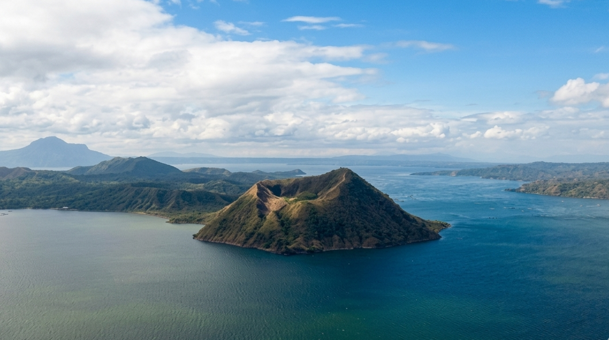

Earth & Deep Time
Geology of the Archipelago
65 million years of tectonic collision, volcanic eruption, and biological isolation — the Philippine archipelago is one of the most geologically dramatic places on Earth.
Earth & Deep Time
65 million years of tectonic collision, volcanic eruption, and biological isolation — the Philippine archipelago is one of the most geologically dramatic places on Earth.
65 Million Years
Tectonic collisions, rising seas, ancient migrations, and explosive evolution — the Philippine islands have one of the most dramatic natural histories on Earth.
Tectonic plates collide in the western Pacific. Volcanic island arcs emerge from the sea, laying the geological foundation for what will become one of the world's most biodiverse regions.
The Philippine Sea Plate collides with the Eurasian Plate. Mountain ranges begin to form. Limestone deposits from ancient coral reefs are lifted above sea level, creating the karst landscapes of Palawan and Bohol.
Periodic land connections allow the first land animals to colonize the islands from mainland Asia. Ancient elephants (Stegodon), giant tortoises, and early primates make landfall.
Rising seas permanently separate the islands. Isolated populations evolve rapidly into new endemic species — the origin of the Philippines' extraordinary biodiversity. This is when the Philippine Eagle lineage begins.
Post-glacial sea levels stabilise. The Philippines sits at the apex of the Tubataha Reef — 76% of all known coral species, 37% of reef fish species, in one of Earth's most productive marine ecosystems.
The second-largest volcanic eruption of the 20th century. Mount Pinatubo ejects 10 cubic kilometres of material, temporarily cooling global temperatures and reshaping the landscape of Central Luzon.
The Philippines remains one of the most volcanically active nations on Earth — sitting on the Pacific Ring of Fire, with 24 active volcanoes and continuous seismic activity shaping its coasts and mountains.
The world's most perfect volcanic cone rises 2,462m above Albay province. Active and beautiful — erupting over 50 times in recorded history. The surrounding biosphere reserve shelters remarkable endemic life.

A volcanic island within a lake, within an island. One of the world's smallest active volcanoes — yet Taal's 2020 eruption was among the Philippines' most dramatic in decades.
The Collection
From the Ring of Fire to the world's most biodiverse marine system — the Philippine geological story spans the full drama of Earth science.
2,462m. The world's most symmetrical volcanic cone. Over 50 recorded eruptions. Surrounded by a UNESCO biosphere reserve rich in endemic life.
A lake within a crater within a lake — Taal is one of the Philippines' most unique geological formations and one of the world's most dangerous volcanoes per area.

At 2,954m, Mount Apo is the Philippines' highest peak and the home of the Philippine Eagle. Its slopes shelter ancient rainforests and a remarkable diversity of highland endemic species.

Ancient coral reefs lifted over millions of years form the dramatic limestone towers of Palawan. Riddled with caves sheltering endemic cave fauna and the UNESCO-listed Underground River.

Over 1,700 conical limestone mounds, turning chocolate brown in the dry season. A geological wonder of Bohol — formed by the weathering of marine limestone over millions of years.

The planet's most biodiverse marine ecosystem. Built over millennia on volcanic seamounts, the reefs of the Philippines host 76% of all known coral species.

At 10,540m deep, the Philippine Trench is the third-deepest point on Earth. Formed by the subduction of the Philippine Sea Plate — the same tectonic force that created the entire archipelago.

The 1991 eruption was the 20th century's second-largest. The crater lake formed in the caldera is now a destination of extraordinary beauty — turquoise against grey volcanic rock.

At 2,922m, Mount Pulag is Luzon's highest peak. Its summit is home to a rare dwarf bamboo grassland — a high-altitude ecosystem found only in the Philippine highlands.
Natural Wonders
The Philippines holds natural phenomena so unusual — so specific to their place — that they defy easy categorisation. These are the sites that leave scientists, explorers, and travellers without words.

At 8.2 km, one of the world's longest navigable underground rivers flows through a limestone mountain straight into the sea. Inside its cathedral-like chambers, stalactites the size of trees hang above a river that has flowed in complete darkness for millions of years.
One of only two navigable underground rivers in the world that empties directly into the sea — creating a tidal pulse inside the cave.

A short river of impossible blue — so deep and so clear that its bottom is invisible. Its water is brackish (part saltwater, part freshwater), yet the source of both the water and its extraordinary colour remains scientifically unexplained. Every day at noon, the caretaker plays music and the fish swarm upward from the depths.
No diver has ever found the source or the bottom. The river appears fully formed — as though the earth simply decided to place a deep, luminous pool at the edge of the jungle.

Deep inside limestone islands, a hidden lagoon accessible only through a submerged cave at low tide is home to millions of stingless jellyfish. The lagoon glows at night with bioluminescence. Ancient stalactites hang above the water; the jellyfish pulse below. It is one of the most surreal natural environments in Southeast Asia.
The lagoon can only be entered by diving under a submerged limestone arch — the entrance disappears completely at high tide. Only a handful of such stingless jellyfish sanctuaries exist in the world.

A scattered archipelago of limestone karst islands in the Lingayen Gulf — shaped by millennia of wave action and coral uplift. The Philippines' third-oldest national park, sheltering reef fish, nesting seabirds, and centuries-old marine biodiversity.
Hundred Islands National Park actually contains 124 islands at low tide — though only about 123 remain at high tide. The park is one of the Philippines' oldest protected areas, declared a national park in 1940.

A freshwater lake cupped inside an ancient limestone mountain — a coral reef tower that the sea lifted above the surface millions of years ago. The lake is reached by climbing over a limestone ridge and descending into a world of mirror-still water, towering karst walls, and submerged stalactites. One of the cleanest freshwater lakes in Asia.
The lake sits inside what was once a coral reef — now 50 metres above sea level. Below its surface, ancient coral formations and submerged stalactites create an underwater landscape unlike anything else in the Philippines.

A pyramid-shaped mountain rising from the sea in Davao Oriental, built on ultramafic rock — ancient ocean crust so toxic and nutrient-poor that most plants cannot survive on it. Those that can have evolved into bizarre, miniaturised forms found nowhere else on Earth: a pygmy forest of bonsai-like trees, carnivorous pitcher plants, and thousands of orchid species compressed into one extraordinary ridge.
The ultramafic soil of Hamiguitan is high in heavy metals and almost entirely lacking in nutrients — creating an evolutionary pressure cooker that has produced over 1,500 endemic plant species on a single mountain.

Two coral atolls rising from the floor of the Sulu Sea — 150 km from the nearest land, accessible only by liveaboard vessel. Tubbataha shelters 360 coral species, 600 fish species, 11 shark species, and 100 bird species on two atolls that together measure barely 100 hectares above water. Below the surface lies an undisturbed reef ecosystem of extraordinary completeness.
Tubbataha is considered the best reference reef in the Philippines — a baseline of what Philippine reefs looked like before human impact. Its shark populations are among the densest in Southeast Asia.

One of the largest cave systems in Asia — a 2.9 km² labyrinth of chambers, underground rivers, and passages beneath the limestone mountains of Samar Island. Its main chamber is so large it creates its own microclimate: clouds form inside the cave and it rains underground. The cave shelters unique endemic invertebrates and has been inhabited by humans since prehistoric times.
The cave is so large it contains its own weather system. Clouds form inside the main chamber — and on some days, it rains within the cave while the sky outside is clear.

The second-largest contiguous coral reef in the world — a 34 km² platform reef rising from the deep waters of the Mindoro Strait. Unlike the patchwork reefs of the coastline, Apo Reef is a single unbroken expanse of living coral, home to sea turtles, reef sharks, manta rays, and over 500 species of fish. It sits in one of the world's most important cetacean migration corridors.
Apo Reef rises from water over 2,000 metres deep — an isolated submarine plateau that has grown, layer by layer, for hundreds of thousands of years. It is one of the last truly intact large reef platforms in Asia.

A vast volcanic rock platform on the Pacific coast of Siargao that is completely submerged at high tide — and transforms into a landscape of crystal-clear tidal pools at low. Carved by millions of years of Pacific wave action into a maze of natural basins, each pool holds its own miniature ecosystem: sea urchins, starfish, small reef fish, and invertebrates stranded by the retreating ocean.
The site exists only for 4–5 hours a day during low tide. At all other times, it is open ocean. The timing of each visit depends entirely on the moon.
Scroll the timeline or filter geological features below.